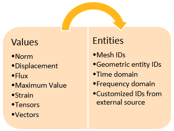
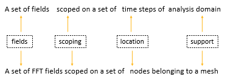
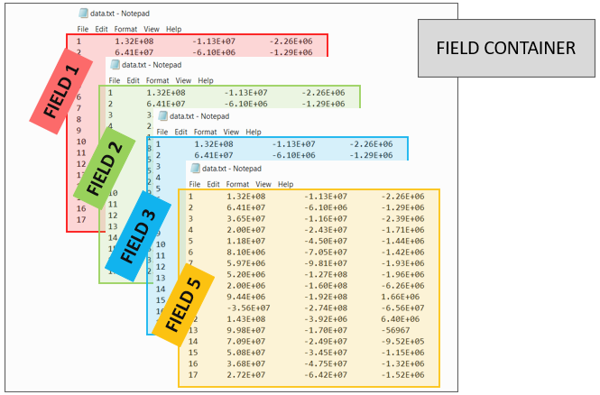
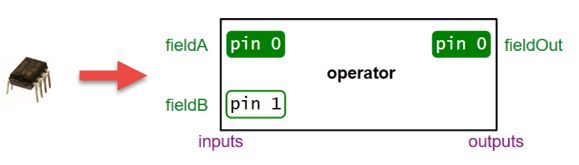
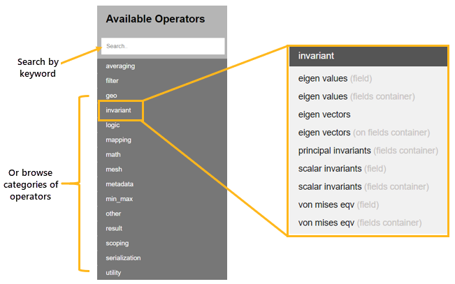
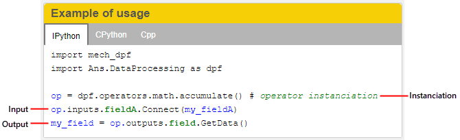
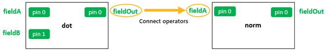

DPF usage#
The goal of using DPF is to transform simulation data into output data that can be used to visualize and analyze simulation results.
There are two main steps to achieve this goal:
Step 1: Define simulation data
Step 2: Transform the data
Define simulation data#
Data can come from two sources:
Simulation result files: DPF automatically recognizes the fields in simulation result files. When using result files as input, you specify the data source by defining where the result files are located.
Manual input in DPF: You can create fields of data in DPF.
Once you specify data sources or manually create fields in DPF, you can create field containers (if applicable) and define scopings to identify the subset of data that you want to evaluate.
Specify the data source#
To evaluate the data in simulation result files, you specify the data source by defining where the results files are located.
This code shows how to define the data source:
from ansys.dpf import core as dpf
data_sources = dpf.DataSources()
data_sources.set_result_file_path('/tmp/file.rst')
data_sources.result_files
['/tmp/file.rst']
To evaluate data files, they must be opened. To open data files, you define streams. A stream is an entity that contains the data sources. Streams keep the data files open and keep some data cached to make the next evaluation faster. Streams are particularly convenient when using large data files. They save time when opening and closing data files. When a stream is released, the data files are closed.
Define fields#
A field is a container of simulation data. In numerical simulations, result data is defined by values associated with entities:
Therefore, a field of data might look something like this:

This code shows how to define a field from scratch:
from ansys.dpf.core import fields_factory
from ansys.dpf.core import locations
from ansys.dpf import core as dpf
field_with_classic_api = dpf.Field()
field_with_classic_api.location = locations.nodal
field_with_factory = fields_factory.create_scalar_field(10)
In DPF, field data is always associated with its scoping and support, making a field a self-describing piece of data. A field can also be defined by its dimensionality, unit, and location. For more information, see Terms and concepts.
Define scopings#
In most cases, you do not want to work with an entire field but rather with a subset of entities in the field. To achieve this, you define a scoping for the field. A scoping is a set of entity IDs on a location. For example, this can be a set of mesh IDs, geometric entity IDs, time domain, or frequency domain.
You specify the set of entities by defining a range of IDs:

You must define a scoping prior to its use in the transformation data workflow.
This code shows how to define a mesh scoping:
from ansys.dpf import core as dpf
# 1. using the mesh_scoping_factory
from ansys.dpf.core import mesh_scoping_factory
# a. scoping with elemental location that targets the elements with id 2, 7 and 11
my_elemental_scoping = mesh_scoping_factory.elemental_scoping([2, 7, 11])
# b. scoping with nodal location that targets the elements with id 4 and 6
my_nodal_scoping = mesh_scoping_factory.nodal_scoping([4, 6])
#2. using the classic API
my_scoping = dpf.Scoping()
my_scoping.location = "Nodal" #optional
my_scoping.ids = list(range(1,11))
Define field containers#
A field container holds a set of fields. It is used mainly for transient, harmonic, modal, or multi-step analyses. This image explains its structure:
A field container is a vector of fields. Fields are ordered with labels and IDs. Most commonly, a field container is scoped on the time label, and the IDs are the time or frequency sets:
You can define a field container in multiple ways:
Extract labeled data from a result file.
Create a field container from a CSV file.
Convert existing fields to a field container.
This code shows how to define a field container from scratch:
from ansys.dpf import core as dpf
fc= dpf.FieldsContainer()
fc.labels =['time','complex']
for i in range(0,20): #real fields
mscop = {"time":i+1,"complex":0}
fc.add_field(mscop,dpf.Field(nentities=i+10))
for i in range(0,20): #imaginary fields
mscop = {"time":i+1,"complex":1}
fc.add_field(mscop,dpf.Field(nentities=i+10))
Some operators can operate directly on field containers instead of fields.
Field containers are identified by fc suffixes in their names.
Operators and field containers are explained in more detail
in Transform the data.
Transform the data#
Once you have defined the simulation data to evaluate, you use operators to transform the data to obtain the desired output. You can chain operators together to create simple or complex data transformation workflows.
Use operators#
You use operators to import, export, transform, and analyze data.
An operator is analogous to an integrated circuit in electronics. It has a set of input and output pins. Pins provide for passing data to and from operators.
An operator takes input from a field, field container, or scoping using an input pin. Based on what it is designed to do, the operator computes an output that it passes to a field or field container using an output pin.
Comprehensive information on operators is available in Operators. In the Available Operators area for either the Entry or Premium operators, you can either type a keyword in the Search option or browse by operator categories:
The page for each operator describes how the operator transforms data, indicates input and output data, and provides usage examples.
Define operators#
Defining an operator consists of three steps:
Instantiate the operator.
Define the inputs.
Store the output.
This image shows how the page for an operator provides a usage example for each available language (IronPython, CPython, and C++).
This code shows how to define an operator from a model:
from ansys.dpf.core import Model
from ansys.dpf.core import examples
model = Model(examples.find_static_rst())
disp_oper = model.results.displacement()
Define workflows#
In most cases, using a single operator is not sufficient to obtain the desired result. In DPF, you can chain operators together to create a complete data transformation workflow, enabling you to perform all operations necessary to get the result that you want.
In a workflow, the output pins of one operator can be connected to the input pins of another operator, allowing the output from one operator to be passed as the input to another operator.
This image shows how you would get the norm of a resulting vector from the dot product of two vectors:
This code shows how to define a generic workflow that computes the minimum
of displacement by chaining the U and min_max_fc operators:
from ansys.dpf import core as dpf
disp_op = dpf.operators.result.displacement()
max_fc_op = dpf.operators.min_max.min_max_fc(disp_op)
workflow = dpf.Workflow()
workflow.add_operators([disp_op,max_fc_op])
workflow.set_input_name("data_sources", disp_op.inputs.data_sources)
workflow.set_output_name("min", max_fc_op.outputs.field_min)
workflow.set_output_name("max", max_fc_op.outputs.field_max)
from ansys.dpf.core import examples
data_src = dpf.DataSources(examples.find_multishells_rst())
workflow.connect("data_sources", data_src)
min = workflow.get_output("min", dpf.types.field)
max = workflow.get_output("max", dpf.types.field)